Layer Settings
In this section, you will learn how to manage the layer settings in terms of general information, display mode, style and feature Info.
Since a layer is added to the TOC it is possible to access its settings with the dedicated button that appears selecting a layer:
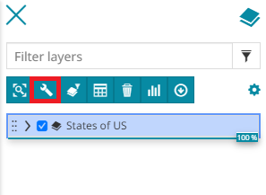
The layer settings panel is composed of four sections:
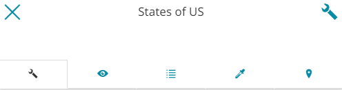
-
General information
-
Display
-
Fields
-
Style
-
Feature Info
Warning
For WMTS layers the Fields, the Style and the Feature Info sections are not implemented. Moreover the Display section is limited to the Transparency layer parameter.
General information
By default, as soon as the user opens the layer settings panel the General information section appears:
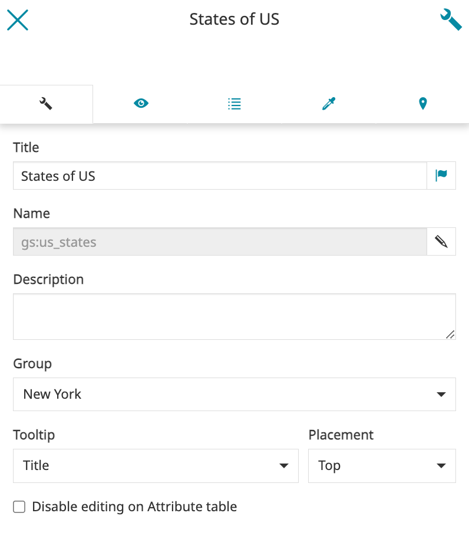
In this page it is possible to:
-
Change the Title
-
Set the translation of the layer title by opening the Localize Text popup through the button. This way the language of the title changes according to the current language setting in MapStore
-
Take a look at the Name of the layer
-
Edit the layer's Description
-
Set the layer Group
-
Configure the Tooltip that appears moving the cursor over the layer's item in TOC. In this case the user can decide that the Title, the Description, both or nothing will be displayed. Moreover you can set the Placement of the tooltip, choosing between Top, Right or Bottom:
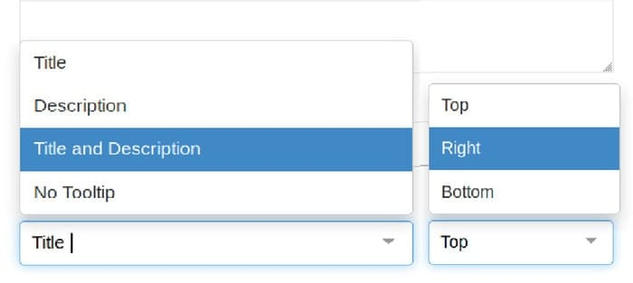
Setting a tooltip that shows the Title and the Description on the Right, for example, it can be similar to the following:
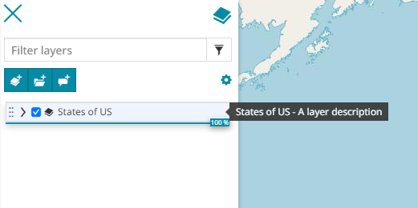
- Disable editing on attribute table. This option allows to disable the editing function in Attribute Table. In case a layer has been set as read-only through this option, the
 icon will not be available in the Attribute Table and in theIdentify panel for the selected layer. This option is unchecked by default and it can be controlled only by users with editing permissions on the map.
icon will not be available in the Attribute Table and in theIdentify panel for the selected layer. This option is unchecked by default and it can be controlled only by users with editing permissions on the map.
Display
Through the second section of the layer settings panel it is possible to change the display settings:
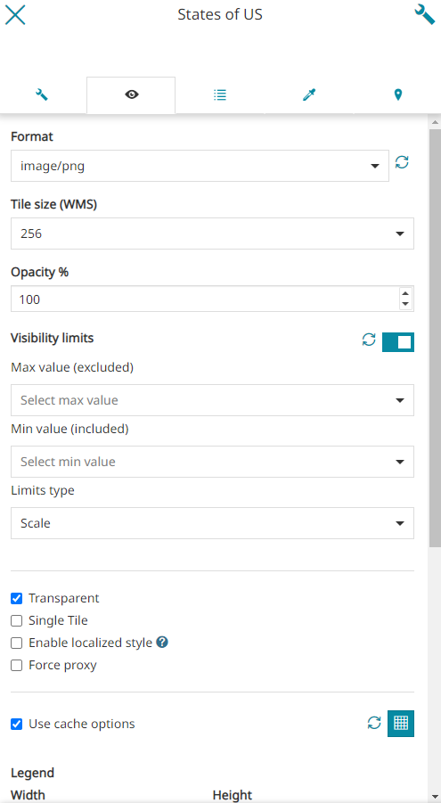
In particular, the user is allowed to:
- Set the image format: choosing between
png,png8,jpeg,vnd.jpeg-png,vnd.jpeg-png8andgif
Note
The list of available format is the same of the related catalog source. Therefore, for WMS services, the updated list of formats supported by the WMS server is used.
- Set the size of layer tiles: choosing between
256or512
Warning
The Format and Layer tile size options are available only for the layers added from CSW and WMS catalog sources.
-
Set the opacity value of the layer (in %)
-
Enable/disable the Visibility limits to display the layer only within certain scale limits. The user is allowed to request the
MinScaleDenominatorandMaxScaleDenominatorvalue present on the WMS GetCapabilities of the layer though the button or set the Max value and the Min value and select the Limits type choosing betweenScaleorResolution. -
Enable/disable the transparency for that layer
-
Decide to display the image as a single tile or as multiple tiles
-
Enable/disable the localized style. If enabled allows to include the MapStore's locale in each GetMap, GetLegendGraphic and GetFeatureInfo requests to the server, as explained in the WMS Catalog Settings
-
Enable/disable the Force proxy layer option. If enabled, forces the application to check the source and applies proxy if needed.
-
Enable/disable the use of the layer cached tiles. If checked, the Tiled=true URL parameter will be added to the WMS request to use tiles cached with GeoWebCache. When the Use cache options is enabled, more controls are enabled so that it is possible for the user to check if the current map settings match any GWC standard Gridset defined on the server side for the given WMS layer (Check available tile grids information ). At the same time, it is also possible to change the setting strategy (based on the WMTS service response) to strictly adapt layer settings on the client side to the ones matching any remote custom Gridset defined for the current map settings (Use remote custom tile grids button).
Note
When the Check available tile grids information button is clicked, an info icon 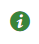 appears to inform the user if the current map settings (Projection, Tile size, Image Format) are properly matching the ones of the given Tile Grids defined on the server side configuration for the layer.
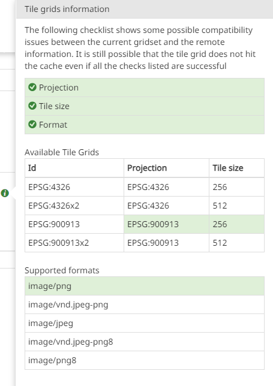
When the Use remote custom tile grids button is enabled, it turns green and a WMTS request is performed by MapStore to fetch precise information to more finely adapt the layer settings on the client side to the ones of the matching Tile Grid defined on the server. The scope of the info icon in this case is still the same but through this strategy MapStore provides a finer tuning of the client side layer settings to better fit the tile grid defined on the server side and so provide better accuracy of cache matching.
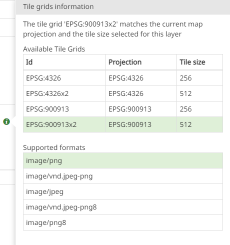
In case the current map/layer settings (Projection, Tile size, Image Format) do not match any of the server-side defined Tile Grids for the given layer the Info panel shows a warning message to indicate the reason for the mismatch so that it is possible for the user to change the needed setting accordingly (for example changing the map projection or selecting a different tile size and/or tile format).
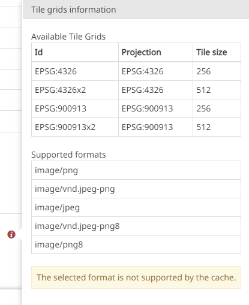
Warning
The Gridset compatibility check made by MapStore whose result is shown by the Info tooltip, is usually quite reliable but should be considered anyway only to provide general matching indicators aimed at highlighting possible compatibility issues between the current layer/map settings and the remote Tile Grid. Due to the cache tolerance considered on the server side by GWC, it might even happen in some cases that the settings available on the client side don't HIT the tile cache even if all the checks listed are successful. At the same time, when the standard gridset is used, gridsets check may fail even if all WMS request are effectively HITTING the cache (e.g. because the WMTS reports a list of origins).
- Enable/disable the Interactive legend. If this option is enabled, legend entries with an associated valid filter are displayed as toggleable items inside the TOC, a user can click on these legend items to filter the content of the layer. An example can be the following one:
Note
Any type of Filter applied to the layer remains active when the legend filter is activated on the same layer.
Warning
The Interactive legend is an experimental option and it is disabled by default. The flag miscSettings.experimentalInteractiveLegend inside localConfig must be set to true to enable this functionality. The Interactive legend is available only for GeoServer WMS layers that support the json format for GetLegendGraphic requests.
-
Set the layer Legend with custom Width and Height options. Both of these field values if greater than the default legend's size of 12, then the custom values gets applied on the legend width and height display property
-
A preview of the legend is shown with the applied custom values from Legend fields above.
Warning
The Format and Layer tile size options are available only for the layers added from CSW and WMS catalog sources.
Display tab for other layer types
3D Tiles layer
On the Display tab, only the following options are available for a 3D Tile layer:
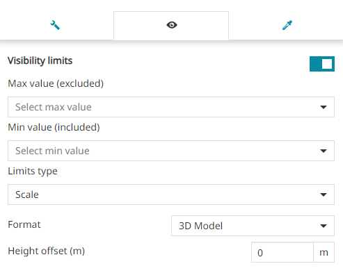
-
The Visibility limits to display the layer only within certain scale limits, as reported above.
-
The Height Offset above the ground.
-
The Format choosing between
3D ModelandPoint Cloud. The Point Cloud option allows the user to customize theMaximum Attenuationof the points based on the distance from the current viewpoint and customize theLighting strengthand theLighting radiusto improve visualization of the point cloud.
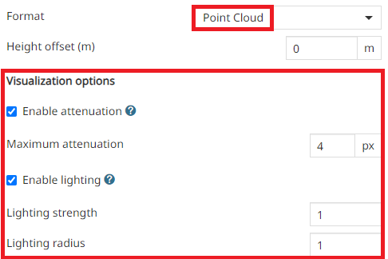
COG layer
On the Display tab, only the following options are available for a COG layer:
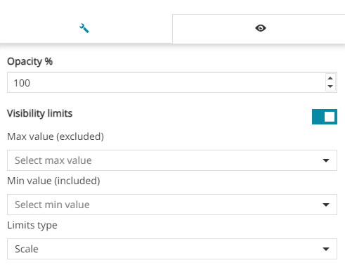
-
The Opacity to change the layer opacity.
-
The Visibility limits to display the layer only within certain scale limits, as reported above.
IFC layer
On the Display tab, only the following options are available for a IFC layer:
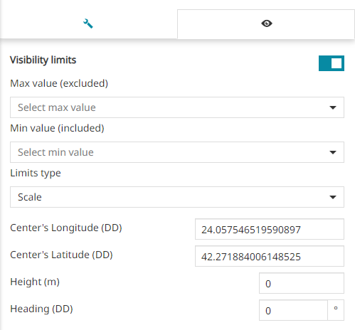
-
The Visibility limits to display the layer only within certain scale limits, as reported above.
-
The Center Longitude to change the center longitude of the layer (
DD). -
The Center Latitude to change the center latitude of the layer (
DD). -
The Height to set the layer height from the ground (
m). -
The Heading to set the layer heading (
DD).
Fields
From this section of the Settings panel, MapStore allows the user to add aliases to layer fields.
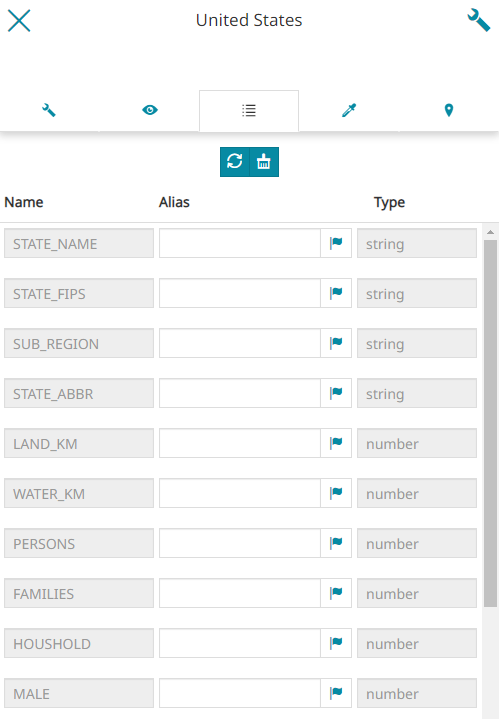
The panel shows the fields (feature attributes) of the layer. For each field the following are specified:
- the Name of the field
- the Alias of the field, which by default is empty
- the Type of field
The Name and the Type of the field cannot be modified, while the alias can be specified by the user.
Using the Localize button, a popup opens so that it is possible to configure the alias of the field as well as its translations.
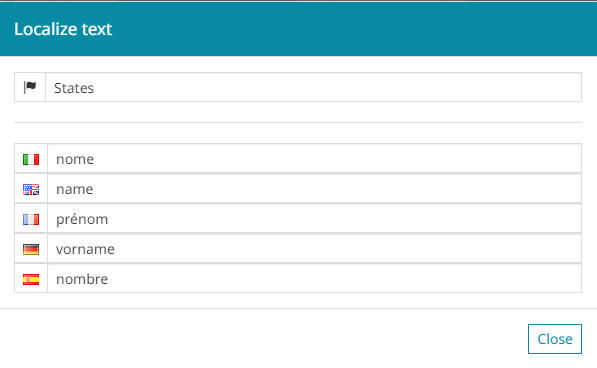
Setting the aliases, it is possible to configure the desired attribute names to be shown in all supported MapStore tools for this functionality and manage related translations accordingly.
The aliases configured in Layers Settings will be used for the following supported MapStore tools:
- Identify (only
propertiesoutput format)
Through the toolbar available on the top-center of the Fields panel, it is possible to:
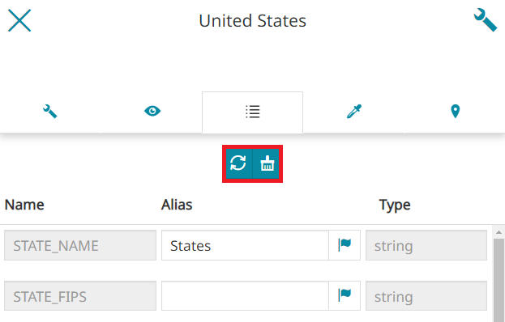
-
Reload the list of fields from the data source using the button
-
Clear all customization in the UI by using the button
Style
The third section, dedicated to the layer style, displays like the following:
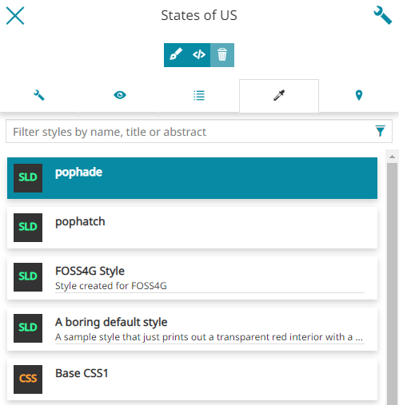
In this case the user is allowed to:
-
Search through the available layer styles and select the desired one
-
Create a new style
-
Edit an existing style
-
Delete an existing style
Note
By the default service security rules the GeoServer's REST APIs are available only for the GeoServer administrators, so a basic authentication form will appears in MapStore to enter the Admin credentials. Without Admin rights, the editing capabilities on styles are not available and only the list of available styles will appear to allow the user to select one of them to the layer.
Take a look at the User Integration with GeoServer section of Developer Guide in order to understand how to configure the way MapStore and GeoServer share users, groups and roles. If the users integration between GeoServer and MapStore is configured, the editing functionalities of the styles will be available according to the role of the authenticated user in MapStore in a more transparent way.
Create a new style
It is possible to create a new style with a click on the button. At this stage the user can choose between different types of template from which the customization will start:
-
CSS - Cascading Style Sheet (a language used for describing the presentation of a document written in a markup language like the HTML)
-
SLD - Styled Layer Descriptor (an XML schema specified by the Open Geospatial Consortium OGC for describing the appearance of map layers)
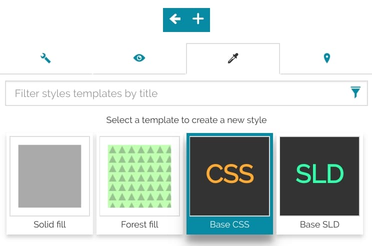
Note
The availability of the style formats depends, firstly, from the GeoServer. MapStore, by default, will add all the supported format that the server provides. To edit or create styles using the CSS format the CSS extension must be installed in GeoServer
Once the new style is chosen, with a click on the button the following window opens:
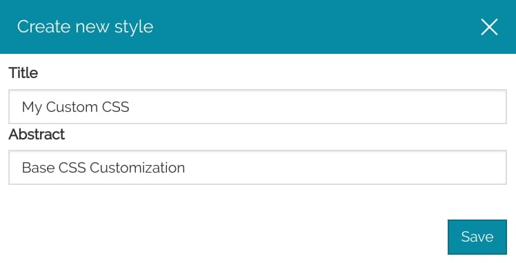
Here the user can set the Title and the Abstract (optional), and through the Save button the new style will be automatically added to the styles list.
Edit an existing style
Existing styles can be edited clicking on the button. The page that opens allows the user to customize the style in the related format:
The editor is easy to approach thanks also to the following functions:
- The sintax control highlights any possible error with a red underline (if error are detected an icon with a red exclamation point will be shown in the top-right side of the editor)
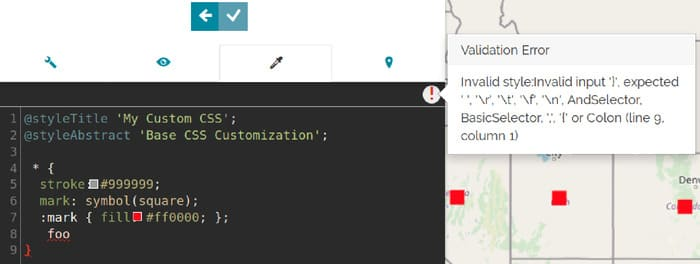
- The autocomplete function suggests the possible style's properties in order to prevents syntax errors:
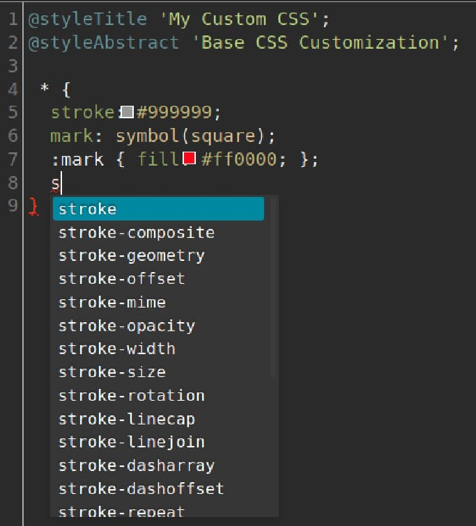
- The color picker, that can be activated through the square filled icon () near the color code, helps in choosing colors directly from the editor, showing an interface like the following:
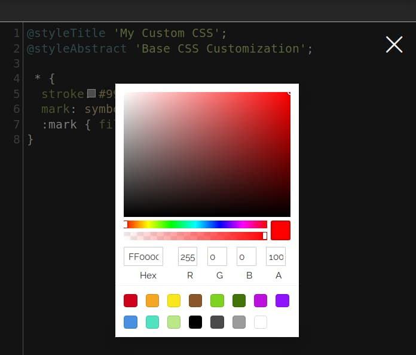
Warning
The autocomplete and the color picker functions are available only in the CSS editor.
Visual Editor Style
MapStore also allows to edit the layers style using a Visual editor with a most user friendly UI.Clicking on the button a section opens so that the user can customize the style through with a visual style editor by adding/editing symbolizers, which can be: Mark, Icon, Line, Fill and Text. It is anyway possible to switch to the text editor mode if necessary for a more complex styling.
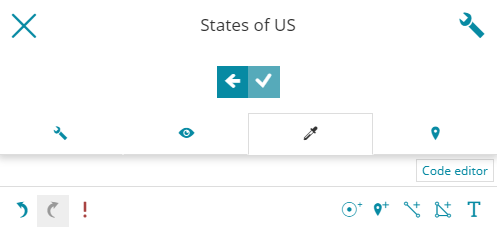
Once a symbolizer has been added and customized, you can:
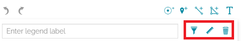
-
Filter the style rule, as explained here, in order to apply the style only to certain layer features. It is possible clicking on the button.
-
Add a Scale denominator filter (
maxandminscale) to visualize the style rule only within certain scale limits. This is possible by clicking the button. -
Remove the symbolizer by clicking the button.
Mark
The mark type allows you to add a mark to the layer: clicking on the  button a mark panel appears:
button a mark panel appears:
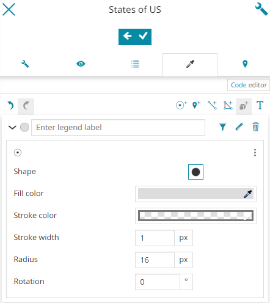
The mark can have different Shape, Color, Stroke with different Color and Width and customizable Radius and Rotation. Take a look at the following example.
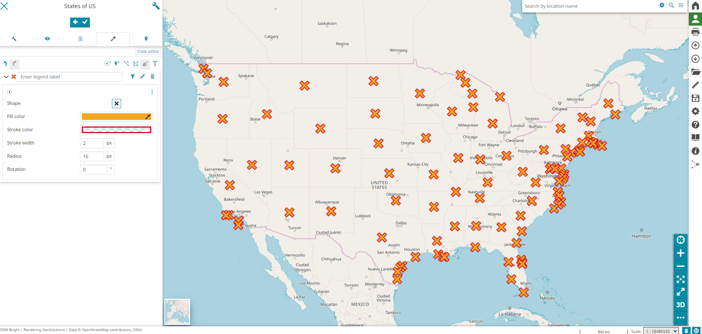
Icon
With the icon panel, which opens by clicking on  button, the style editor is allowed to add an image as an icon (by specifying its URL) and customize the icon
button, the style editor is allowed to add an image as an icon (by specifying its URL) and customize the icon Opacity, Size and Rotation angle:
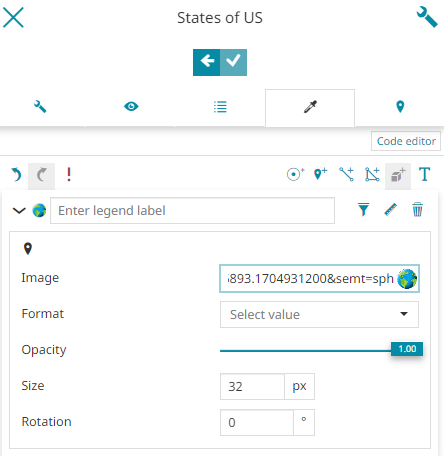
Line
The line rule is used to style linear features of the layer: clicking on the 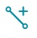 button a panel allows the user to edit the corresponding properties.
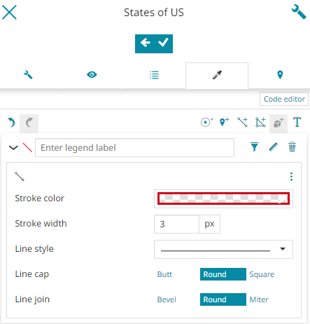
The editor can change the Stroke color, the Stroke width, the Line style (continuous, dashed, etc), the Line cap (Butt, Round, Square) and the Line join (Bevel, Round, Miter). An example can be the following one:
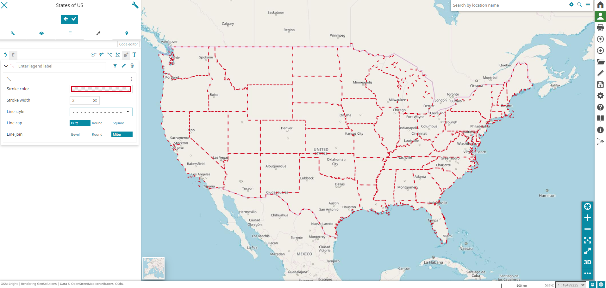
Fill
The Fill rule is used to style polygon features. Clicking on 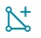 button, the editor is allowed to customize the Fill color, the Outline color and the Outline width:
Text
The Text rule is used to style features as text labels. Text labels are positioned either at points or along linear paths derived from the geometry being labelled. Clicking on the button a specific panel opens:
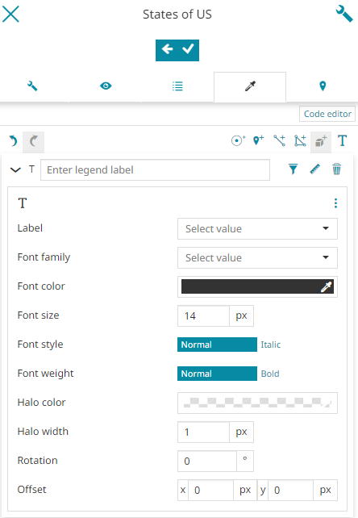
The editor is allowed to type the name of the layer attribute to use for the Label and the dropdown list is filtered accordingly to show the existing attributes that are matching the entered text (the user can anyway directly select an attribute from the list). Moreover, the style editor can customize the Font Family (DejaVu Sans, Serif, etc), choose the font Color, Size, Style (Normal or Italic) and Halo weight (Normal or Bold) and select the desired Halo color and Halo weight. It is also possible to choose the text Rotation and Offset (x and y). En example can be the following one
Style Methods for Vector layer
Different styles methods can be used for each style rule. Clicking on the button, available on top of the panel of each symbolizer, the editor can choose one of the following depending on the rule type:
-
Simple style
-
Classification style
-
Pattern mark style (available only for rules of type Line and Fill)
-
Patter icon style (available only for rules of type Line and Fill)
Simple style
The Simple style is the default style described above for each symbolizer.
Classification style
MapStore allows you to classify the style based on the attributes of the layer. The Classification style is available for Marker, Line, Fill and Text by clicking on the button and choosing the Classification style options from the dropdown menu.
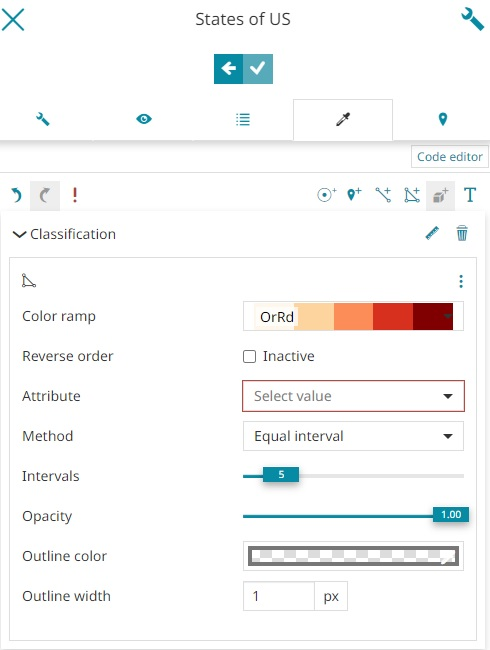
It this case the editor is allowed to choose a Color ramp and the order (with Reverse order) of the classification intervals colors. It is obviously possible to select the layer Attribute to use for the classification along with the classification Method (Quantile, Equal interval, Natural breaks and Standard deviation), the number of classification Intervals and the Opacity (%) of each interval range. An example of the Classification style for a Fill rule type can be the following one:
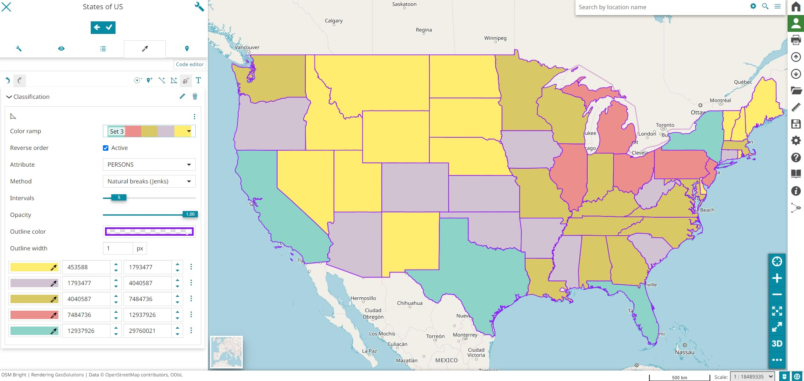
Note
The Classification style method is available for WMS, WFS and Vector layers. In case of WMS layers the Classification style can work only against GeoServer where the SLD Service module need to be installed. In case of WFS and Vector layers, the same classification capabilities are entirely managed client.
Note
From the Classification style options, it is also possible to manage Custom Parameter thought the button. That's really useful to style SQL Views defined in GeoServer by using one of the available viewparams 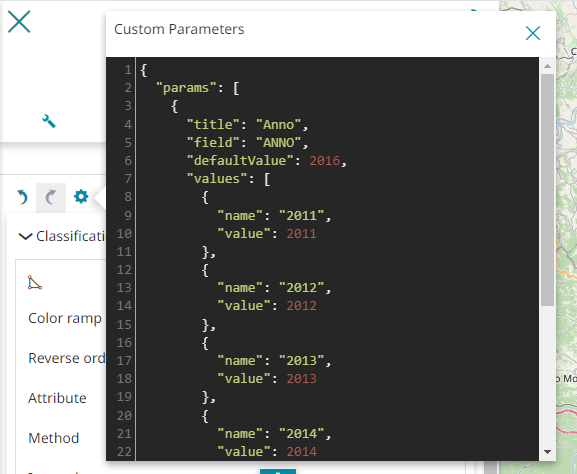
Here the user can add custom parameters that will be visible in the Visual Style Editor, above the Color Palette option. The Custom Parameters requires an array of fields to be configured according to the available viewparams defined in the SQL View.
Pattern mark style
With the Pattern mark style it is possible to represent Line or Fill style rules with a mark by clicking on the button and choosing the Pattern mark style options from the dropdown menu.
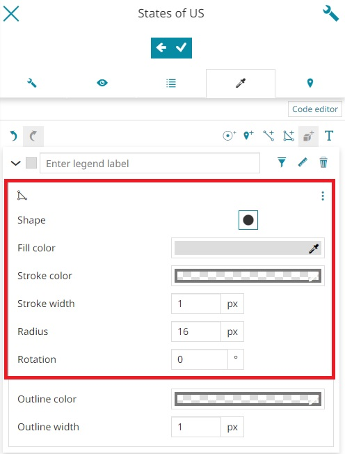
The style editor can configure a Mark as explained here along with the usual options available for rules of type line or fill depending on the selected symbolizer. Take a look at the following example of the Pattern mark style for the Line rule sample.
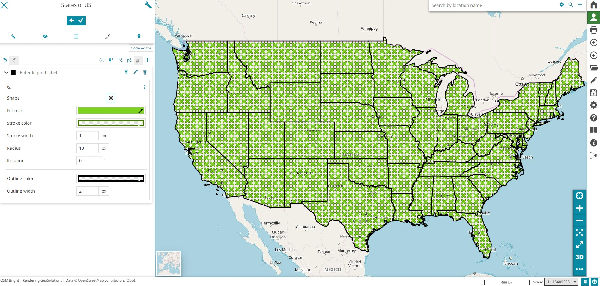
Patter icon style
With the Pattern icon style it is possible to represent Line or Fill style rules with an icon by clicking on the button and choosing the Pattern icon style options from the dropdown menu.
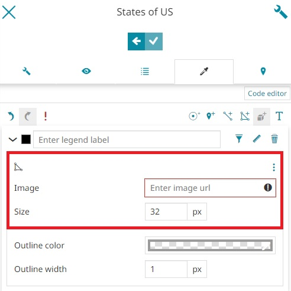
The style editor can configure the Icon as explained here along with the usual options available for rules of type line or fill depending on the selected symbolizer. Take a look at the following example of Pattern icon style for a Fill rule sample.
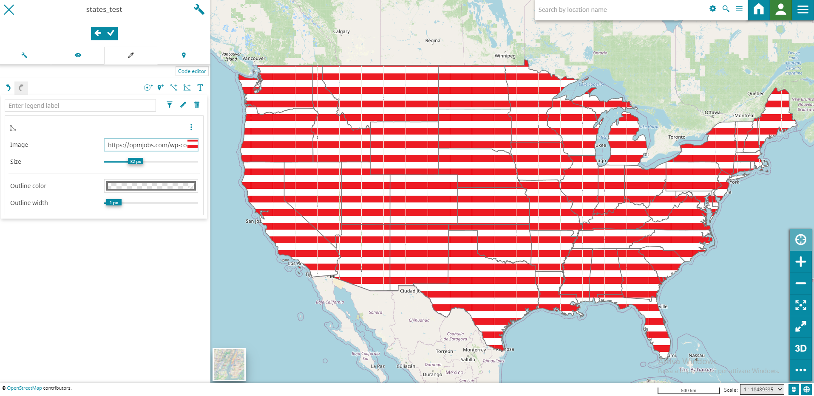
Style with property value
MapStore allows you to use a property of the layer feature as value for a symbolizer property. The Property value function is available for Marker, Icon, Line, Fill, Text and 3D model by clicking on the button of each symbolizer property supporting it.
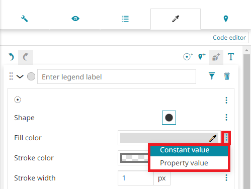
By default, Constant value is selected. If the user chooses Property value, a drop-down menu appears so that the desired layer attribute can be selected to use its values for the styling property.
Warning
As a Property value only attributes of type string or number are currently supported.
Note
The Style with property method is available only for WFS and Vector layers.
Style Methods for Raster layer
MapStore also allows to edit the Raster Layers style using a Visual editor. Through the button, available on top of the panel, the editor can choose one of the following styles methods:
- Single band
- RGB bands
- Pseudo color
Single band
The Single band is the default one and here the user can choose the Channel to customize selecting the Contrast enhancement choosing between None, Normalize and Histogram and the change the Opacity. Take a look at the following example.
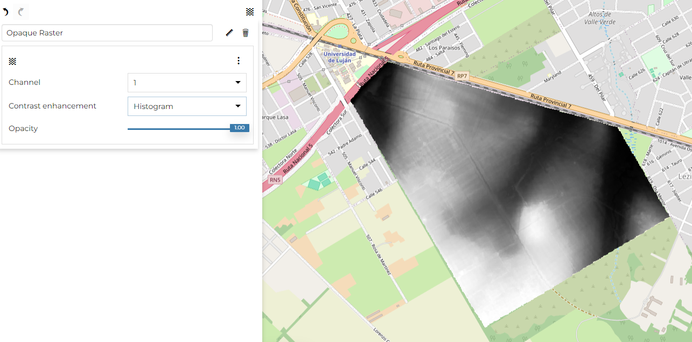
RGB bands
With the RGB bands the user can customize the three Channels of the layer, if they are available, and for each one selecting the Contrast enhancement choosing between None, Normalize and Histogram and the change the Opacity. Take a look at the following example.
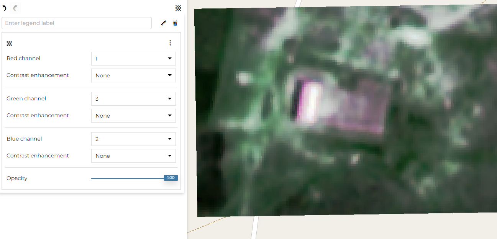
Pseudo color
With the Pseudo color the user has the possibility to customize the Single band with a Color ramp. In this case, in addition to choosing Channels, Contrast enhancement and Opacity, the user can select Color ramp, enable Reverse order and the Continuous Colors, choose the Color map type (Ramp, Intervals and Values), the Method (Quantile, Natural breaks, Equal interval and Unique interval) and modify the Intervals. Take a look at the following example.
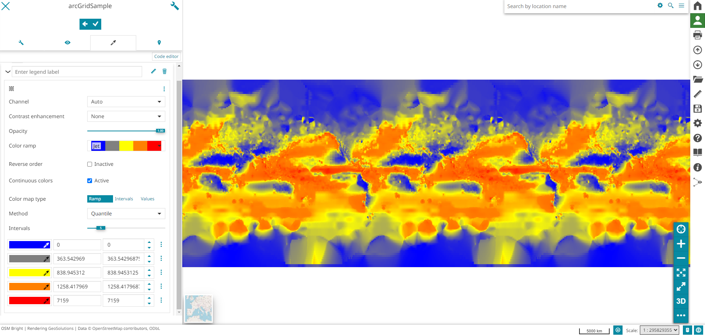
Styling for COG layer
With the Visual Style Editor, the editor has the ability to customize the style of COG layers:
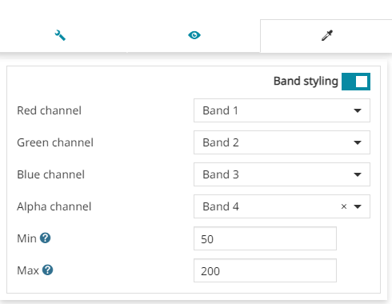
Enabling the Band styling section, here the editor can associate the Channels (Red, Green, Blue and Alpha) to the Bands of the COG layer and set the minimum (Min) and maximum (Max) source data value. Take a look at the following example.
Styling on the 3D navigation
Thanks to the new improvements made to the Visual Style Editor editor, when 3D Navigation is enabled, the editor has the ability to customize the style of 3D Tiles and vector layers.
Styling of 3D Tiles layer
With MapStore it is possible to customize the style of a 3D Tiles layer client side. The MapStore support is working in respect of the 3D Tiles Specification 1.0 and on top of the Cesium Styling capabilities. Below is an example of how the Style Editor of a 3D Tiles layer is appearing in the MapStore UI.
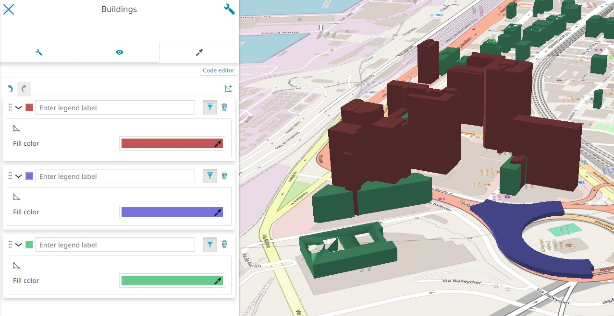
For the 3D Tiles styling, while with the Code Text Editor it is possible to leverage completely on the styling specifications:
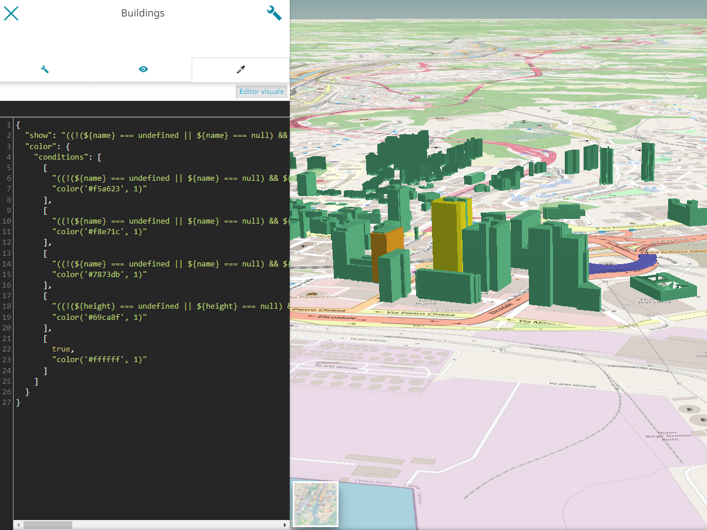
The MapStore Visual Style Editor supports for now only a limited set of capabilities:
- Customization of the Fill color
- Style Rule filtering based on the available properties dictionary defined in the tileset.json
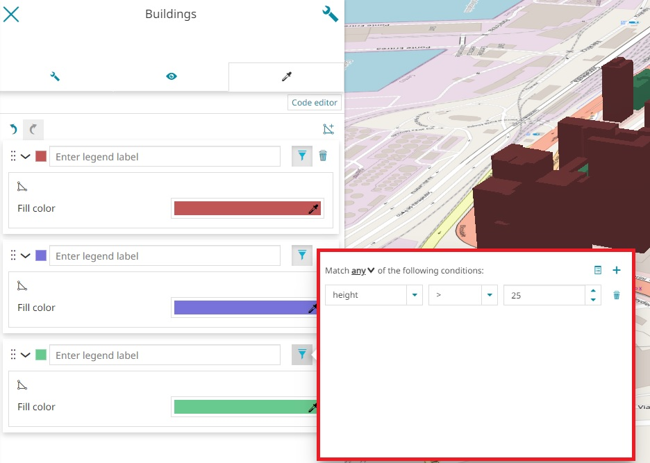
- Possibility to customize the radius in case of point cloud features
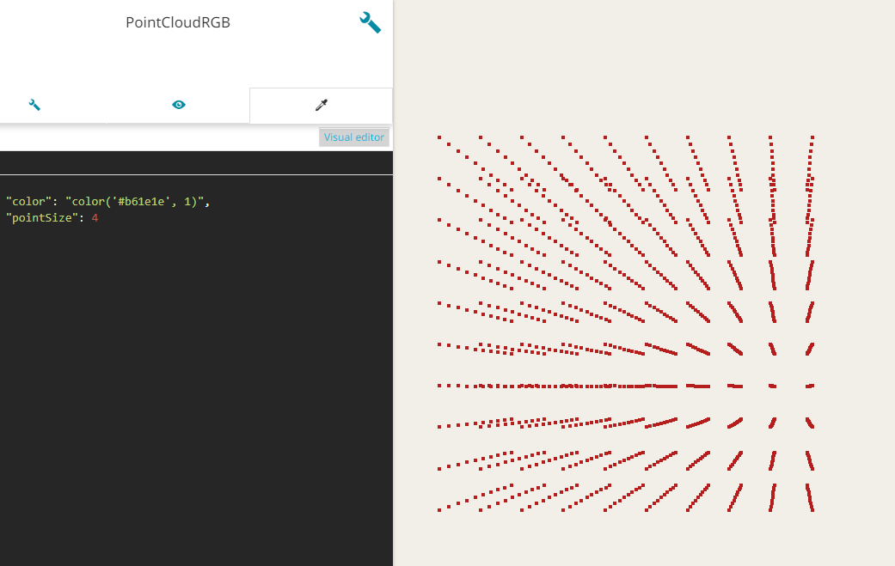
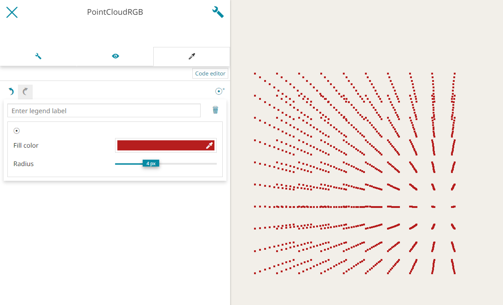
Styling of Vector layer
In 3D mode MapStore allows to customize the style of the Vector layer through the Visual Style Editor using the same styling options available in 2D mode as described in the previous chapter.
In addition the 3D model rule type is also available.
From the Visual Style Editor, by clicking on  button, the 3D model symbolizer panel opens to allow adding a 3D model (based on glTF, GLB is also allowed) as an external graphic by specifying its URL (see also the Cesium documentation). Furthermore, it is possible to customize the 3D model
button, the 3D model symbolizer panel opens to allow adding a 3D model (based on glTF, GLB is also allowed) as an external graphic by specifying its URL (see also the Cesium documentation). Furthermore, it is possible to customize the 3D model Scale, X/Y/Z Rotation, Color and X/Y Translation of the model's external graphic. Take a look at the following example.
Warning
For the Vector layer, the Visual Style Editor have some limitations:
-
It's possible to apply only one type of symbolizer at the time, so if the rule editor shows multiple rule with the same filter, only the first one is used.
-
For the Line symbolizers: the Line cap and Line join options are not available as properties in Cesium
Furthermore, for WFS layers, MapStore adds some additional styling options in the Visual Style Editor such as:
- Bring to front (available for Icon, Mark and 3D model symbolizers) to bring in front and so to make visible (if enabled) all features covered by 3D Tile layers and the Terrain layer (for this last case when the depth test against terrain option is enabled in Global Settings).
- Height reference from ground (available for Mark, Icon, 3D Model and Text symbolizers) to indicate the reference for the point height between
None(to the absolute zero of the ground),Relative(to the terrain layer level) orClamp(the feature is clamped to the Terrain, if present, or to the ground). It is also possible to finely configure the Height value of the point symbols by choosing between one of the attributes of the feature (where Point height indicates the intrinsic height of the feature geometry) selecting Attribute Value or choosing Constant Value that allows to set the raw value of the height.
- Leader line (available for Mark, Icon, 3D Model and Text symbolizers) to add a line to connect the point symbol with the Terrain/Ground to have a more clear reference of the effective point position when the camera orientation change. The editor can choose the Width of the line and the Color through the usual color picker.
- Clamp to ground to enable/disable the boolean property specifying whether the line or polygon features should be clamped to the ground (this option is available for Line and Fill symbolizers).
- Clamp to ground reference to choose whether the drape effect, should affect
3D Tiles,TerrainorBoth. This option is available for Fill symbolizers and it is only enabled when the Clamp to ground option is set toTrue
- Extrusion Height (available for Line and Fill symbolizers) to configure the height value of the feature to be extruded. It is also possible to enable/disable the Extrusion relative to geometry (from the highest point of the feature geometry) and, only for the Line symbolizers, the user can customize the Extrusion color and the Extrusion type, choosing between
Wall,CircleandSquareoptions, for the extruded features.
Feature Info Form
Through the last section of the layer settings panel, it is possible to decide the information format that appears querying a layer with the Identify Tool:
In particular, the user can choose between:
-
Disable Identify to disable the Identify for the layer
-
Text
-
HTML
-
Properties
-
Template
Note
Without selecting any format here, the Identify Tool will return the layers information with the format chosen in Map Settings ( in the Side Toolbar). Once a user specifies the information format in layers settings, instead, that format will take precedence over the map settings only for that specific layer.
Note
From the Layer Settings panel, MapStore allows users to choose the Information format for WMS and WFS layer types.
The Text option is only available for WMS layers, while the HTML option for WFS layers is available only with GeoServer and if the wfs-freemarker extension is installed on the GeoServer side.
Text
An example of layer information in text format can be:
HTML
An example of layer information in HTML format can be:
Properties
An example of layer information in properties format can be:
Templates
In this case the user can customize the information format:
In particular, by clicking on the button, the following text editor appears:
Note
Clicking on the  button, the Identify Template editor allows to insert images in different ways:
button, the Identify Template editor allows to insert images in different ways:
-
Using direct URLs of resources available on the web
-
Using URIs encoded in base64
-
Parsing needed image URLs from available feature attributes (eg. attributes with URL value). The usual syntax can be used in this case to refer the attribute value (eg.
${properties.IMAGE}) -
Parsing image URIs encoded in base64 from available feature attributes (eg. attributes with base64 URIs values). The usual syntax can be used in this case to refer the attribute value (eg.
${properties.IMAGE})
Here it is possible to insert the text to be displayed through the Identify Tool, with the possibility to wrap the desired properties.
Let's make an example: we assume to have a layer where each record corresponds to a USA State geometry in the map. In the Attribute Table of this layer there's the STATE_NAME field that, for each record, contains a text value with the name of the State.
If the goal is to show, performing the Identify Tool, only the State name, an option could be to insert the following text on the Template text editor:
In this case, by clicking on the map, the Identify Tool returns:
Using the ${properties.NAME_OF_THE_FIELD} syntax, MapStore is able to parse the response to the Identify Tool request by matching the configured placeholder.